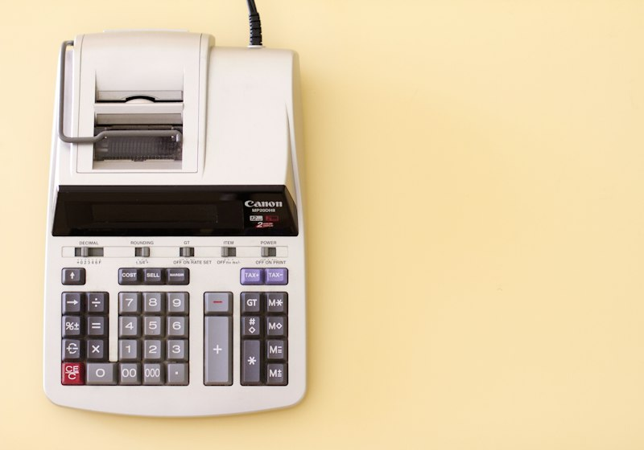

Frais d'assurance vie : le comparatif ligne par ligne des 16 contrats
Versement, gestion sur le fonds en euros, gestion sur les unités de compte, arbitrage et sortie en rente : les cinq lignes, contrat par contrat.
Le rendement se lit une fois par an, les frais se prélèvent tous les jours. Nous publions les deux au même endroit, parce qu'un demi-point de frais annuels efface un bon exercice de fonds en euros.
Le taux servi au titre du dernier exercice, la moyenne sur trois ans, le niveau de garantie du capital et les conditions de bonus. Un taux affiché avec une condition d'unités de compte n'est pas un taux servi à tout le monde.

Versement, gestion sur le fonds en euros, gestion sur les unités de compte, arbitrage et sortie en rente : les cinq lignes, contrat par contrat.
Le coût du mandat s'ajoute aux frais du contrat et aux frais des supports. Nous additionnons les trois étages pour chaque offre.
Mille supports ne valent pas mieux que cent si les frais courants ne sont pas affichés. Ce qu'il faut regarder sur une fiche de fonds.
Le même versement de 20 000 € passé dans quatre grilles de frais différentes. L'écart final atteint plusieurs milliers d'euros.
La garantie nette de frais de gestion n'est pas la garantie brute. Le détail, contrat par contrat.
Trois profils d'allocation, trois trajectoires, et ce que la volatilité change sur huit ans.
Note globale sur 10 du seul fonds en euros : rendement servi, régularité sur trois ans, niveau de garantie du capital et absence de condition d'accès.
Voir la méthode de notationComparez deux contrats sur le rendement et sur les frais en un clic.
Il dépend entièrement de l'allocation. Un contrat placé à 100 % sur le fonds en euros suit le taux servi par l'assureur, publié chaque année en janvier. Un contrat investi en unités de compte suit les marchés, à la hausse comme à la baisse, sans garantie du capital.
Cinq lignes : les frais sur versement, les frais de gestion annuels du contrat, les frais courants des supports choisis, les frais d'arbitrage et, en cas de sortie en rente, les frais d'arrérages. Seules les deux premières sont visibles sur la page commerciale, les trois autres sont dans les conditions générales.
Trois leviers : choisir un contrat sans frais de versement, préférer des supports à frais courants bas à qualité égale, et ne pas multiplier les arbitrages sur les contrats qui les facturent. Sur huit ans, ces trois choix pèsent plus lourd que le choix du fonds en euros.
Non. Beaucoup de taux mis en avant sont des taux bonifiés, conditionnés à une part minimale d'unités de compte ou à un versement dans une fenêtre donnée. Le taux servi au contrat de base figure dans le rapport annuel de l'assureur.
Sur une durée longue, les frais l'emportent parce qu'ils sont certains alors que le rendement ne l'est pas. Un écart de 0,5 point de frais de gestion annuels sur 20 000 € pendant huit ans représente environ 900 € de capital final.
Un email par mois : les rendements servis dès leur publication, les hausses de frais repérées dans les conditions générales et les nouveaux comparatifs.
Pas de publicité, pas de revente de fichier, désinscription en un clic.